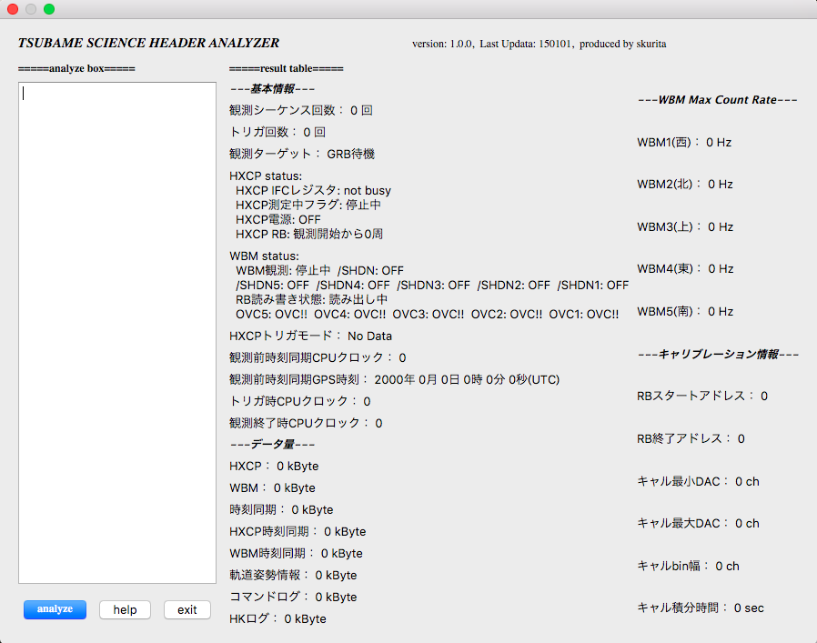

名前 / Name
栗田 真 / Shin Kurita (@montblanc18 / Hikaru)
Systems Engineer.
Lovin' Python and Ruby.
本業は工場勤務のシステムエンジニア。趣味はプログラミング。
栗田 真 / Shin Kurita (@montblanc18 / Hikaru)
宇宙物理学 / Astrophysic
普通自動車第一種免許・ITパスポート・応用情報技術者・教員免許(中高・数理の計4枚)
Basketball, Musium, Aquarium, Linux, programming
MBA 13 inch, MBP 13 inch, ThinkPad X220, Nexus 6P, Kindle Fire, Google Home, iPod touch 5th, Raspberry Pi 3B, Omega2 plus, and so on
Japanese, (English,) C/C++, Python, Ruby, Bash, and so on
statstester
統計検定をサポートするためのパッケージ
制御用ソフト
観測機器を制御するためのソフト。実装・単体テスト・統合テストを担当。Mac上で書いたCコードをクロスコンパイルし、ARM上で動作。
TSUBAME Science Header Analyzer

観測データのヘッダーを解析するツール。すべての観測データを軌道上から地上に転送するには通信速度が圧倒的に足りなかったため、ヘッダーのみからデータを選別するために作成。学生によるチームのため、環境が個人依存。あらゆるOSで動作できるよう、フレームワークとしてQtを使用。
使用ツール：Git, C++, Qt
DP10 for TSUBAME
ある時点での衛星の起動情報（位置・速度）から将来のイベントを予測し、観測に必要なコマンドを自動生成するツール。Suzaku衛星で使用されていたツールの出力画像を参考にし、開発。当時の研究室で使用者の多かったPythonと本来解析用ではあるがROOTを描画に使用している。軌道計算部分のみ、チームで所有していたライブラリの都合からC++を使用。
使用ツール：Git, Python, ROOT, C++
過去の発表について公開できるもの
第13回 宇宙科学シンポジウム @ 宇宙科学研究所 (ポスター)
"超小型衛星「TSUBAME」搭載用硬X線偏光観測システムの開発" Poster
栗田真, 林真由美, 川上孝介, 常世田和樹, 榎本雄太, 戸泉貴裕, 谷津陽一, 河合誠之（東工大理）, 松永三郎（ISAS/JAXA、東工大連携）,片岡淳, 中森健之（早稲田大）, 久保信（クリアパルス）
2013年天文学会春季大会 @ 埼玉大学 (口頭)
"超小型衛星TSUBAME搭載用検出器の研究開発"
栗田真, 林真由美, 川上孝介, 常世田和樹, 谷津陽一, 河合誠之（東工大理）, 松永三郎（ISAS/JAXA、東工大連携）,片岡淳, 中森健之（早稲田大）, 久保信（クリアパルス）、他TSUBAMEチーム
重力波天体の多様な観測による宇宙物理学の新展開 第2回シンポジウム @ 東京工業大学（Poster + 1 min talk）
"Absorption lines of High Redshift GRB 130606A observed by Subaru FOCAS" PDF
S. Kurita, Y. Saito, N. Kawai (Tokyo Tech.), G. Kosugi, K. Aoki, T. Hattori (NAOJ), T. Totani (Tokyo Univ.) and Subaru GRB team
Suzaku-MAXI Conference 2014 @ 愛媛大学 (Poster)
"Development of a micro-satellite TSUBAME for X-ray polarimetry of GRBs"
S. Kurita, K. Ito, M. Arimoto, Y. Yatsu, N. Kawai (Tokyo Tech), M. Matsushita, S. Kitamura, T. Kamiya, S. Matunaga (Tokyo Tech/JAXA), and TSUBAME team
2014年度天文学会春季大会 @ 国際基督教大学（口頭）
"すばるFOCASで観測された高赤方偏移 GRB 130606A の吸収線スペクトル"
栗田真、斉藤嘉彦、河合誠之(東工大理)、小杉城治、青木賢太郎、服部尭(国立天文台)、戸谷友則(東大)、他すばるGRBチーム
The 40th COSPAR SCIENTIFIC ASSEMBLY @ Moscow University (Poster)
"Absorption Lines of High Redshift GRB 130606A observed by Subaru FOCAS"
S. Kurita, Y. Saito, N. Kawai (Tokyo Tech.), G. Kosugi, K. Aoki, T. Hattori (NAOJ), T. Totani (Tokyo Univ.) and Subaru GRB team
2014年度天文学会秋季大会 @ 山形大学 (口頭)
"超小型衛星TSUBAMEのソフトウェア開発と統合試験"
栗田真、大内遙河、伊藤慶、有元誠、谷津洋一、河合誠之（東工大理）、太田佳、古賀将哉、EuGene Kim、鈴木聡太、俵京佑、宮里和良、長洲孝、河尻翔太、松下将典、松永三郎（東工大工学/ISAS）、森山永久、木村真一（東京理科大）、他TSUBAME開発チーム
Fifth International Fermi Symposium @ 名古屋大学 (Poster + 3 min talk)
"Development of a Micro-satellite TSUBAME for X-ray Polarimetry of GRBs" Abstrace Poster Proceeding
S. Kurita, H. Ohuci, M. Arimoto, Y. Yatsu, N. Kawai(Tokyo Tech), T. Nagasu, S. Kawajiri, M. Matsushita, S. Matunaga(Tokyo Tech/ISAS) on behalf of TSUBAME team
第15回 宇宙科学シンポジウム @ 宇宙科学研究所 (ポスター)
"TSUBAME衛星搭載ガンマ線バースト硬X線偏光観測システムの開発" Poster
栗田真、大内遙河、有元誠、谷津陽一、河合誠之(東工大)、太田佳、古賀将哉、Kim EuGene、鈴木聡太、俵京佑、宮里和良、長洲孝、河尻翔太、松下将典、松永三郎(東工大/ISAS)、森山永久、木村真一(東京理科大)、他TSUBAME開発チーム
重力波天体の多様な観測による宇宙物理学の新展開 第3回シンポジウム @ 広島大学（Poster + 2 min talk）
"Development of a micro-satellite TSUBAME for X-ray Polarimetry of GRBs"
S. Kurita, M. Arimoto, Y. Yatsu, N. Kawai(Tokyo Tech), K. Ohta, M. Koga, E. Kim, S. Suzuki, K. Tawara, K. Miyasato, T. Nagasu, S. Kawajiri, M. Matsushita, S. Matunaga(Tokyo Tech/ISAS), N. Moriyama, S. Kimura(Tokyo Univ. of Science) and TSUBAME team
2015年天文学会春季大会 @ 大阪大学 (口頭)）
"超小型衛星TSUBAMEの打ち上げと運用"
栗田真、大内遙河、有元誠、谷津陽一、河合誠之(東工大理)、太田佳、古賀将哉、Kim EuGene、鈴木聡太、俵京佑、宮里和良、長洲孝、河尻翔太、松下将典(東工大工)、松永三郎(東工大/ISAS)、森山永久、木村真一(東京理科大)、他TSUBAME開発チーム